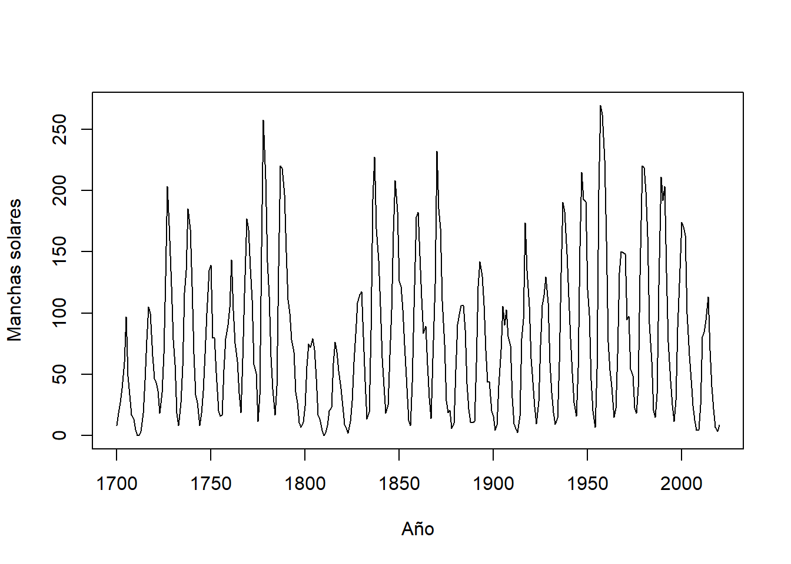
5 Series de Tiempo
Las series temporales tienen su origen en la necesidad de comprender y predecir patrones presentes en datos secuenciales en el transcurso del tiempo. A lo largo de la historia, diversas civilizaciones han registrado observaciones cronológicas con el propósito de anticipar fenómenos naturales, eventos económicos y otros procesos cambiantes.
No obstante, el enfoque más sistemático en el análisis de series temporales se inició en el ámbito de la estadística y la econometría durante el siglo XX. Figuras pioneras como Norbert Wiener y Andrey Kolmogorov establecieron los cimientos teóricos en torno a los procesos estocásticos (Wiener (1949)).
La relevancia de las series temporales en la predicción de datos radica en su habilidad para capturar patrones temporales y tendencias presentes en conjuntos de datos. A medida que se acumulan datos a lo largo del tiempo, es posible identificar relaciones y ciclos que facilitan la realización de pronósticos futuros. Esto resulta especialmente valioso en campos como la economía, la meteorología, la epidemiología y las finanzas, donde comprender los patrones temporales es crucial para tomar decisiones informadas.
En la actualidad, con el advenimiento de la computación y las técnicas de análisis más avanzadas, las series temporales han adquirido una importancia aún mayor. Modelos matemáticos y estadísticos avanzados, como los modelos ARIMA (Media Móvil Integrada Autoregresiva) y las redes neuronales recurrentes, permiten analizar y predecir series temporales con mayor precisión y complejidad. Estos modelos son esenciales para la toma de decisiones estratégicas en diversas industrias, ya que ayudan a anticipar tendencias, identificar patrones estacionales y enfrentar la incertidumbre en el futuro.
En términos generales, una serie temporal puede considerarse como una recopilación de observaciones realizadas secuencialmente en el tiempo. El interés de este análisis no recae en las series que son deterministas, sino en aquellas cuyos valores se comportan siguiendo las leyes de la probabilidad. Se discutirán los principios fundamentales involucrados en el análisis estadístico de series temporales. Para comenzar, se debe prestar una atención más meticulosa a la definición de serie temporal, dado que en realidad es un tipo particular de proceso estocástico.
5.1 Conceptos básicos y manipulación de series de tiempo
Definición 5.1 (Serie de tiempo) Un proceso estocástico \(X(t); t\in T\) se define como una colección de variables aleatorias, donde \(T\) es un conjunto de índices para el cual todas las variables aleatorias, \(X(t)\), donde \(t\) pertenece a \(T\), están definidas en el mismo espacio muestral. Cuando \(T\) representa el tiempo, se hace referencia al proceso estocástico como una serie de tiempo.
Si \(T\) toma un rango continuo de valores (por ejemplo, \(T=(-\infty,\infty)\) o \(T=(0,\infty)\)) , el proceso se dice que es un proceso de parámetro continuo. Si, por otro lado, \(T\) toma un conjunto discreto de valores (por ejemplo, \(T = \{0, 1, 2,\ldots\}\) o \(T = \{0, \pm 1, \pm 2,\ldots \}\)), el proceso se dice que es un proceso de parámetro discreto. De hecho, es común referirse a estos como procesos continuos y discretos, respectivamente.
Se utilizará la notación de subíndice, \(X_t\), cuando se esté tratando específicamente con un proceso de parámetro discreto. Sin embargo, cuando el proceso involucrado sea de parámetro continuo o de tipo no especificado, se utilizará la notación de función, \(X(t)\). Además, cuando no haya confusión, a menudo se utiliza la notación \(\{X(t)\}\) o simplemente \(X(t)\) para denotar una serie de tiempo. De manera similar, a menudo se acortará \(\{X_t;t=0,\pm 1,\ldots \}\) a \(X_t,t=\{0,\pm 1,\ldots\}\) o simplemente se usará \(X_t\).
Nótese que una variable aleatoria, \(\gamma\) , es una función definida en un espacio muestral \(\Omega\) cuyo rango son los números reales. Un valor observado de la variable aleatoria \(\gamma\) es un número real \(y=\gamma(\omega)\) para algún \(\omega\in\Omega\). Para una serie de tiempo \(\{X(t)\}\), su “valor” \(\{X(t,\omega);t\in T\}\) para algún \(\omega\in\Omega\) fijo es una colección de números reales. Esto lleva a la siguiente definición.
Definición 5.2 (Realización) Una realización de la serie de tiempo \(\{X(t);t\in T\}\) es el conjunto de resultados de valores reales, \(\{X(t,\omega);t\in T\}\) para un valor fijo de \(\omega \in \Omega\).
La colección de todas las posibles realizaciones se denomina conjunto y, para un valor dado de \(t\), la expectativa de la variable aleatoria \(X(t)\) se denomina media del conjunto y se denotará como \(\mathrm E[X(t)]=\mu(t)\) . La varianza de \(X(t)\) se expresa como
\[ \mathrm{Var}[X(t)]:=\mathrm{E}[(X(t)-\mu(t))^2] \]
y a menudo se denota como \(\sigma^2(t)\) ya que también puede depender de \(t\).
De especial interés, en el análisis de una serie temporal, es la covarianza entre \(X(t_1)\) y \(X(t_2)\), donde \(t_1, t_2\in T\). Dado que esta es la covarianza dentro de la misma serie temporal, se refiere a ella como autocovarianza. De igual manera, se refiere a la correlación dentro de una misma serie como autocorrelación y se denotan por
\[ \gamma(t_1,t_2):=\mathrm{E}[(X(t_1)-\mu(t_1))(X(t_2)-\mu(t_2))] \tag{5.1}\]
y
\[ \rho(t_1,t_2):= \frac{\gamma(t_1,t_2)}{\sigma(t_1)\sigma(t_2)} \tag{5.2}\]
respectivamente.
5.1.1 Series de tiempo estacionarias
En el estudio de una serie de tiempo, es común que solo se tenga disponible una única realización de la serie. El análisis de una serie temporal basado únicamente en una realización es análogo a analizar las propiedades de una variable aleatoria en función de una sola observación. Los conceptos de estacionariedad y ergodicidad jugarán un papel importante en mejorar la capacidad de análisis de una serie temporal basada en una única realización de manera efectiva. Un proceso se considera estacionario si está en un estado de “equilibrio estadístico”. El comportamiento básico de dicha serie de tiempo no cambia con el tiempo. Como ejemplo, para dicho proceso, \(\mu(t)\) no dependería del tiempo y, por lo tanto, podría ser denotado como \(\mu\) para todo \(t\). Parecería que, dado que \(x(t)\) para cada \(t\in T\), proporciona información sobre la media del conjunto \(\mu\), podría ser posible estimar \(\mu\) en función de una única realización. Un proceso ergódico es aquel para el cual promedios de conjunto como \(\mu\) pueden estimarse consistentemente a partir de una sola realización. En esta sección, se presentarán definiciones más formales de estacionariedad. La noción más restrictiva de estacionariedad es la de estacionariedad estricta, que se define de la siguiente manera.
Definición 5.3 (Proceso estrictamente estacionario) Se dice que un proceso \(\{X(t); t \in T\}\) es estrictamente estacionario si para cualquier \(t_1, t_2,\ldots, t_k \in T\) y cualquier \(h \in T\), la distribución conjunta de \(\{X(t_1), X(t_2),\ldots , X(t_k)\}\) es idéntica a la de \(\{X(t_1 + h), X(t_2 + h),\ldots, X(t_k + h)\}\).
La estacionariedad estricta requiere, entre otras cosas, que para cualquier \(t_1, t_2 \in T\), las distribuciones de \(X(t_1)\) y \(X(t_2)\) deben ser las mismas, y además que todas las distribuciones bivariadas de pares \(\{X(t), X(t + h)\}\) sean iguales para todos los \(h\), etc. El requisito de estacionariedad estricta es riguroso y suele ser difícil de establecer matemáticamente. De hecho, para la mayoría de las aplicaciones, las distribuciones involucradas no se conocen. Por esta razón, se han desarrollado nociones menos restrictivas de estacionariedad. La más común de ellas es la estacionariedad por covarianza.
Definición 5.4 (Estacionariedad por covarianza) La serie de tiempo \(\{X(t); t \in T\}\) se considera estacionaria por covarianza si
\(\mu_{_{X_t}}=\mathrm E[X(t)] = \mu\) (media constante para todo \(t\)).
\(\sigma^2_{_{X_t}}=\mathrm{Var}[X(t)] = \sigma^2 < \infty\) (es decir, una constante finita para todo \(t\)).
\(\gamma_{_{X_{t_1},X_{t_2}}}\) y \(\rho_{_{X_{t_1},X_{t_2}}}\) depende solo de \(t_2 − t_1\).
Si se cumple la condición iii., no habrá confusión al reemplazar la notación \(\gamma_{_{X_{t_1},X_{t_2}}}\) con \(\gamma_{_{t_1-t_2}}\) y, de manera similar, al denotar \(\rho_{_{X_{t_1},X_{t_2}}}\) como \(\rho_{_{t_1-t_2}}\). Cuando se establece \(t_2-t_1=k\), se hace referencia a \(\gamma_{_k}\) y \(\rho_{_k}\) como la autocovarianza y la autocorrelación con un rezago de \(k\), respectivamente.
La función de autocovarianza de una serie de tiempo estacionaria satisface las siguientes propiedades:
\(\gamma_{_0}=\mathrm E[(X_{t}-\mu)(X_{t}-\mu)]=\mathrm E[(X_{t}-\mu)^2]=\sigma^2\).
\(|\gamma_{_k}|\leq \gamma_{_0}\) para todo \(k\).
\(\gamma_{_k}=\mathrm{E}[(X_{t-k}-\mu)(X_t-\mu)]=\mathrm{E}[(X_t-\mu)(X_{t-k}-\mu)]=\gamma_{_{-k}}\).
La función \(\gamma_{_k}\) es semidefinida positiva. Esto es, para cualquier conjunto de puntos de tiempo \(t_1, t_2,\ldots,t_k\in T\) y para los reales \(b_1,b_2,\ldots, b_k\), se tiene
\[\sum_{i=1}^k \sum_{j=1}^k \gamma(t_i-t_j)b_i b_j\geq 0. \]
La función de autocorrelación satisface las siguientes propiedades análogas:
\(\rho_{_0} = 1\).
\(|\rho_{_k}|\leq 1\) para todo \(k\).
\(\rho_{_k}=\rho_{_{-k}}\).
La función \(\rho_{_k}\) es semidefinida positiva, y para series de tiempo discretas definidas en \(t = 0, 1, 2,\ldots\), la matriz
\[ \boldsymbol{\rho}_k = \begin{pmatrix}1 & \rho_1 & \ldots & \rho_{_k}\\ \rho_1 & 1 & \ldots & \rho_{k-1}\\ \vdots & \vdots & \ddots & \vdots\\ \rho_{_k} & \rho_{k+1}&\ldots & 1\end{pmatrix} \]
es semidefinida positiva para cada \(k\).
Observación. La estacionariedad por covarianza también se conoce como estacionariedad débil, estacionariedad en el sentido amplio y estacionariedad de segundo orden. En el resto de esta tesis, a menos que se especifique lo contrario, el término estacionariedad se referirá a la estacionariedad por covarianza.
En las series de tiempo, al igual que en la mayoría de las otras áreas de la estadística, los datos no correlacionados desempeñan un papel importante. No hay dificultad en definir dicho proceso en el caso de una serie temporal de parámetro discreto. Es decir, la serie temporal \(\{X_t; t = 0, \pm 1, \pm 2,\ldots\}\) se llama “proceso puramente aleatorio” si los \(X_t\) son variables aleatorias no correlacionadas. Al considerar procesos puramente aleatorios, solo nos interesará el caso en el que los \(X_t\) también estén distribuidos de manera idéntica. En esta situación, es más común referirse a la serie de tiempo como ruido blanco. La siguiente definición resume estas observaciones.
Definición 5.5 (Proceso de ruido blanco) Se dice que un proceso \(X_t\) es ruido blanco si se cumplen las siguientes condiciones.
Los \(X_t\) están distribuidos de manera idéntica.
\(\gamma_{_{t_2-t_1}} = 0\) cuando \(t_2 \ne t_1\).
\(\gamma_{_{t-t}} = \sigma^2\), donde \(0 < \sigma^2 < \infty\) .
En un proceso de ruido blanco, cada observación está no correlacionada con todas las demás observaciones. Un hecho importante es que los procesos de ruido blanco son estacionarios.
5.1.1.1 Estimación de los parámetros de un proceso estacionario.
5.1.1.1.1 Estimación de \(\mu\).
Dada la realización \(\{x_t, t = 1, 2,\ldots , n\}\) de una serie temporal estacionaria, la estimación natural de la media común \(\mu\) es la media muestral
\[ \bar{x}=\frac{1}{n}\sum_{t=1}^n x_t. \tag{5.3}\]
Es evidente que el estimador \(\bar{X}\) es imparcial para \(\mu\).
Para una serie temporal estacionaria, se pueden emplear los datos a lo largo del tiempo para estimar la media, dado que se asume que la media es constante para cada instante de tiempo \(t\).
5.1.1.1.1.1 Ergodicidad de \(X\).
Se dice que \(X\) es ergódico para \(\mu\) si \(X\) converge en el sentido de la media cuadrática hacia \(\mu\) a medida que \(n\) aumenta, es decir, si \(\lim\limits_{n\to\infty}\mathrm{E}[(\bar X -\mu)^2]=0\).
Teorema 5.1 Sea \(\{X_t; t=0,\pm 1,\pm 2, \ldots\}\) una serie de tiempo estacionaria. Entonces, \(\bar X = \frac{1}{n}\sum\limits_{t=1}^n X_t\) es ergódica para \(\mu\) si y solo si
\[ \lim\limits_{k\to \infty} \frac{1}{k} \sum_{j=0}^{k-1} \gamma_j =0. \tag{5.4}\]
Prueba. Vea Yaglom (1962).
Corolario 5.1 Sea \(X_t\) una serie de tiempo estacionaria con parámetros discretos, como se establece en el Teorema 5.1 . Entonces, \(\bar X\) es ergódico para \(\mu\) si
\[ \lim\limits_{k\to\infty} \gamma_{_k}=0, \tag{5.5}\]
o equivalentemente si
\[ \lim\limits_{k\to\infty} \rho_{_k}=0. \tag{5.6}\]
La condición suficiente para la ergodicidad de \(\bar X\), dada en el Corolario 5.1, resulta muy útil y es una condición que se cumple para la amplia clase de series temporales autorregresivas de media móvil, ARMA\((p,q)\), estacionarias, que se discutirán más adelante. A pesar de que \(X_t\)’s “cercanos” en el tiempo pueden tener una correlación sustancial, la condición en el Corolario 5.1 asegura que, para una “gran” separación, están casi no correlacionados.
5.1.1.1.1.2 Varianza de \(\bar X\).
Antes de abandonar el tema de estimar \(\mu\) a partir de una realización de un proceso estacionario, en el Teorema 5.2 se proporciona una fórmula útil para la Varianza de \(\bar X\).
Teorema 5.2 Sea \(X_t\) una serie de tiempo estacionaria, la varianza de \(\bar X\) basada en una realización de longitud \(n\) está dada por
\[ \mathrm{Var}(\bar X)=\frac{\sigma_X^2}{n}\left(1+2\sum_{k=1}^{n-1}\left(1-\frac{|k|}{n}\right)\rho_{_k}\right). \tag{5.7}\]
El resultado en la ecuación (5.7) muestra el efecto de la autocorrelación en la varianza de \(\bar X\), y si \(X_t\) es ruido blanco, es decir, \(\gamma_{_{k}} = 0\) si \(k \ne 0\), entonces la ecuación (5.7) se convierte en el conocido resultado \(Var(\bar X) = \sigma^2/n\).
Utilizando la notación \(\hat \rho_{_k}\) para denotar las autocorrelaciones estimadas (muestra) y \(\hat\sigma^2=\hat{\gamma_0}\) para denotar la varianza muestral, es práctica común obtener intervalos de confianza aproximados del \(95\%\) para \(\mu\) usando
\[ \left(\bar X- 1.96\sqrt{\frac{\hat\sigma^2}{n}\sum_{k=-(n-1)}^{n-1}\left(1-\frac{|k|}{n}\right)\hat\rho_{_k}}, \bar X+ 1.96\sqrt{\frac{\hat\sigma^2}{n}\sum_{k=-(n-1)}^{n-1}\left(1-\frac{|k|}{n}\right)\hat\rho_{_k}}\right). \tag{5.8}\]
5.1.1.1.2 Estimación de \(\gamma_{_k}\).
Debido a la estacionariedad, \(\mathrm E[(X_t − \mu)(X_{t+k} − \mu)] = \gamma_{_k}\) no depende de \(t.\) Como consecuencia, parece razonable estimar \(\gamma_{_k}\) a partir de una sola realización, esto es
\[ \begin{split}\hat{\gamma}_{_k}&= \frac{1}{n}\sum_{t=1}^{n-k}(X_t-\bar X)(X_{t+k}-\bar X), \quad 0\leq k\leq n\\ &=0,\qquad k\ge n\\ &=\hat{\gamma}_{_{-k}},\quad k<0.\end{split} \tag{5.9}\]
Observación. Usando la ecuación (5.9) se deduce que
\[ \hat{\gamma}_{_0}= \frac{1}{n}\sum_{t=1}^{n}(X_t-\bar X)^2. \tag{5.10}\]
5.1.1.1.3 Estimación de \(\rho_{_k}\).
Definición 5.6 (Autocorrelación muestral) El estimador de la autocorrelación, \(\rho_{_{k}}\) se obtiene mediante
\[ \hat\rho_{_{k}}=\hat\gamma_{_{k}}/\hat\gamma_{_{0}}. \tag{5.11}\]
A este estimador se le conoce como la autocorrelación muestral.
A partir del análisis de la ecuación (5.9) , es evidente que los valores de \(\hat\gamma_{_{k}}\) (y \(\hat\rho_{_{k}}\)) tenderán a ser “pequeños” cuando \(k\) sea grande en relación con \(n\).
5.1.2 Conjuntos de datos de series temporales.
Los comportamientos exhibidos por los datos de series temporales son diversos y se analizarán en las secciones subsiguientes. Dichos tipos de comportamiento se ilustrarán mediante ejemplos provenientes de la realidad, tales como los datos intrigantes de manchas solares, registros de temperatura, el índice Dow Jones, precios de acciones individuales, datos de ventas (tanto mensuales como diarios), entre otros. El análisis comenzará con una discusión sobre datos que presenten algún tipo de patrón cíclico (Woodward, Sadler, y Robertson (2022)).
5.1.2.1 Datos Cíclicos
Muchos conjuntos de datos de series temporales muestran un patrón cíclico, lo que significa que los datos presentan aumentos y disminuciones de manera algo repetitiva. Estos datos a veces se denominan “pseudo-periódicos”, un término que usaremos de manera sinónima con “cíclico”. Los datos de manchas solares en la Figura 5.1 son un ejemplo de datos cíclicos.
Observación. Los datos verdaderamente periódicos exhiben un comportamiento que se replica de manera precisa a lo largo de un período de tiempo establecido. Un caso ilustrativo de datos puramente periódicos se encuentra en la forma de la curva sinusoidal. De este modo, los datos pseudoperiódicos (o cíclicos) se refieren a aquellos conjuntos de datos que tienden a mostrar repeticiones en sus comportamientos.
Ejemplo 5.1
Ejemplo 5.2
5.1.2.2 Tendencias
Una tendencia, en un contexto de análisis de datos, se refiere a la inclinación de una serie de datos al experimentar un incremento o disminución constante a lo largo del tiempo. En el caso específico de los datos de Pasajeros Aéreos mostrados en la Figura 5.3, se identifica un patrón de crecimiento además del patrón estacional previamente observado. Una tendencia lineal se caracteriza por el aumento o la disminución de los datos de manera constante y progresiva, tal como se ilustra en la Figura 5.5 (a). Las tendencias pueden seguir una curva, como lo ejemplifica la tendencia exponencial en la Figura 5.5 (b). Por otro lado, la Figura 5.5 (c) exhibe una serie temporal con una tendencia descendente, pero su naturaleza es más irregular en comparación con las tendencias representadas en las Figuras (a) y (b). Un patrón común en conjuntos de datos es un comportamiento de tendencia aleatoria, como se muestra en la Figura 5.5 (d), la cual sugiere una trayectoria sin un rumbo definido. Esto implica que pueden existir tendencias de corta o larga duración, en ocasiones en direcciones opuestas.
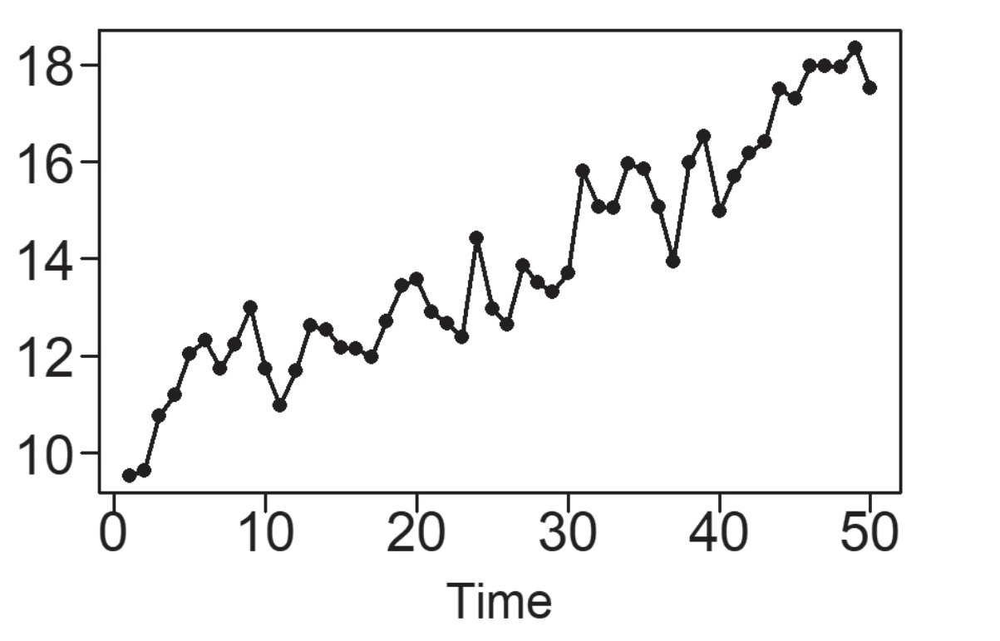
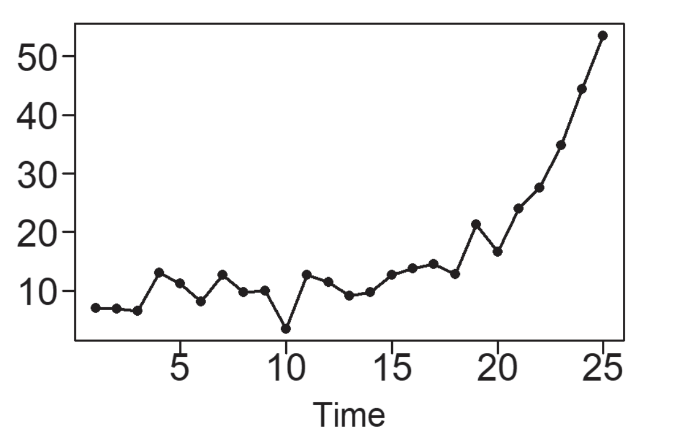
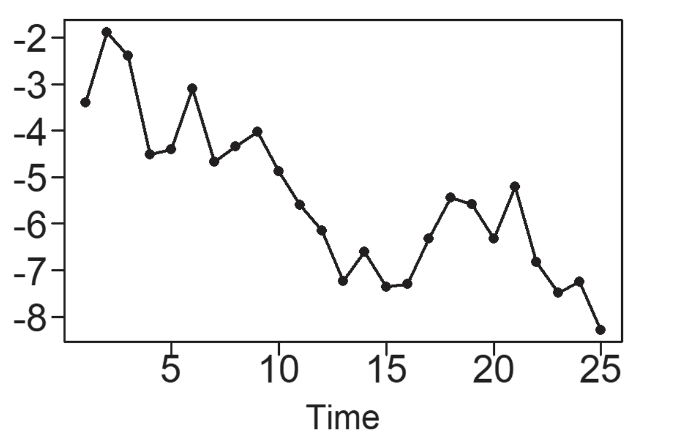
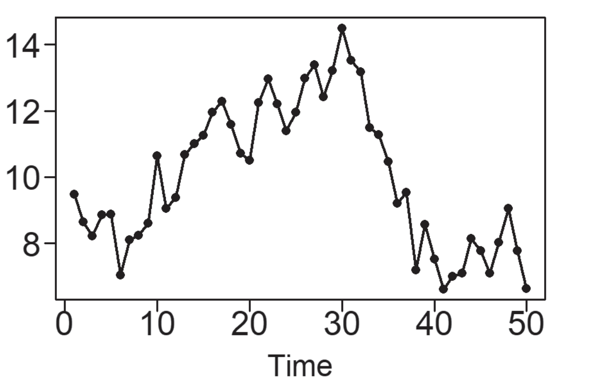
Definición 5.7 La función \(g(t)\) es periódica con periodo (o longitud del ciclo) \(p > 0\) si \(p\) es el valor más pequeño tal que \(g(t) = g(t + kp)\) para todo \(t\) y enteros \(k\). Se dice que una función \(g(t)\) es aperiódica si no existe tal \(p\).
Definición 5.8 (Frecuencia) La frecuencia, denotada por \(f\), puede ser descrita de las siguientes dos maneras;
\(f=1/\text{periodo}\) (tamaño del ciclo).
El número de ciclos en la función a través de una unidad de tiempo.
Observación. Los datos con comportamiento de tendencia y deambulación aleatoria no son cíclicos por naturaleza. A veces se les llama aperiódicos debido a la ausencia de un comportamiento regular de ascenso y descenso.
5.1.2.3 Definición y propiedades del espectro y densidad espectral
Definición 5.9 Sea \(X_{_t}\) una serie de tiempo estacionaria con autocovarianza \(\gamma_{_k}\) y autocorrelación \(\rho_{_k}\). Entonces para \(|f|\le 0.5\):
El espectro de \(X_{_t}\) se define como
\[ P_{_X}(f)=\sum_{k=-\infty}^\infty e^{-2\pi ifk}\gamma_{_k}. \tag{5.12}\]
La densidad espectral de \(X_{_t}\) se define como
\[ S_{_X}(f)=\sum_{k=-\infty}^\infty e^{-2\pi ifk}\rho_{_k}. \tag{5.13}\]
Usando la fórmula de Euler en las ecuaciones (5.12) y (5.13), se obtienen las siguientes fórmulas.
\[ P_{_X}(f)=\sigma_{_X}^2+2\sum_{k=1}^\infty\gamma_{_k}\cos(2\pi fk), \]
\[ S_{_X}(f)=1+2\sum_{k=1}^\infty \rho_{_k}\cos(2\pi fk). \]
Estas fórmulas enfatizan que el espectro y la densidad espectral son funciones de valor real, lo que no es evidente en las ecuaciones (5.12) y (5.13).
Propiedades importantes de densidades espectrales
\(S_{_X}(f)\geq 0\).
\(S_{_X}(f)=S_{_X}(-f)\).
\(S_{_X}(f)=1+2\sum\limits_{k=1}^\infty \rho_{_k}\cos(2\pi fk)\), donde \(|f|\le 0.5\) .
\(\sum\limits_{-0.5}^{0.5}S_{_X}(f)e^{2\pi ifk}df=\rho_{_k}\).
Las propiedades i y ii muestran que \(S_{_X}(f)\) es una función par no negativa.
5.1.3 Suavizado de datos de series temporales.
Existen varios métodos para “suavizar” el comportamiento ruidoso (posiblemente poco importante) de una serie temporal, para que se pueda entender mejor una señal importante subyacente. Se comienza discutiendo el método de suavizado de promedio móvil centrado, que es el más básico.
5.1.3.1 Suavizado de datos utilizando un suavizador de promedio móvil centrado
El suavizador de promedio móvil centrado es un método para reemplazar los valores de datos en una serie temporal con un promedio de los valores de datos que rodean (e incluyen) ese punto de datos. Por ejemplo, un suavizador de promedio móvil centrado de orden tres reemplaza un valor de datos \(x_{_t}\) en el tiempo \(t\) con \(s_{_t} = (x_{_{t-1}}+x_{_t}+x_{_{t+1}})/3\). Es decir, se asigna el valor promedio al punto de tiempo medio. Por lo tanto, un suavizador de promedio móvil centrado de orden tres no puede asignarse al primer o último punto de tiempo de una serie temporal. Se sigue que a mayor orden, más valores faltarán al principio y al final del conjunto de datos suavizado. Para un promedio móvil centrado de tercer orden, la fórmula de promediado se desplaza a lo largo del conjunto de datos de la serie temporal, considerando tres valores de datos consecutivos juntos hasta llegar a los últimos tres puntos temporales.
Definición 5.10 (Suavizador de Promedio Móvil Centrado) Sea \(x_{_t}, t=1,\ldots,n\) un conjunto de datos de series temporales. El suavizador de promedio móvil centrado se define de la siguiente manera:
Caso 1: \(m\) es un número impar.
Sea \(k= (m−1)/2\). Para \(k <t< n - k\), el valor de los datos suavizados, \(s_{_t}\), en el tiempo \(t\) se da por
\[ s_{_t}=\frac{1}{m}\sum_{i=t-k}^{t+k}x_{_i}. \tag{5.14}\]
Caso 2: \(m\) es un número par.
Sea \(k= m/2\). Para \(k <t< n - k\), el valor de los datos suavizados, \(s_{_t}\), en el tiempo \(t\) está dado por
\[ s_{_t}= \frac{x_{_{t-k}}}{2m}+\frac{1}{m}\sum_{i=t-k+1}^{t+k-1}x_{_i}+\frac{x_{_{t+k}}}{2m}. \tag{5.15}\]
El Ejemplo 5.3 muestra el uso del suavizado de promedio móvil centrado con el propósito de detectar o comprender mejor señales subyacentes y fundamentales en los datos.
Ejemplo 5.3
5.2 Análisis y técnicas de descomposición.
5.2.1 Descomposición de datos estacionales
En el Ejemplo 5.2 se aborda la naturaleza de los datos estacionales, entendidos como una serie de datos cíclicos con periodos consistentes y un patrón que guarda relación con el calendario. El conjunto de datos de AirPassengers presentado en la Figura 5.3 se clasifica como un ejemplo paradigmático de datos estacionales. Este conjunto de datos exhibe un comportamiento estacional anual, además de una tendencia de crecimiento, que se aproxima a ser lineal. Es convencional considerar que los datos estacionales, denotados como \(x_{_t}\), comprenden:
Un componente estacional intrínseco anual, identificado como \(s_{_t}\),
Un componente de tendencia a largo plazo, referido como \(tr_{_t}\) y,
Un componente de variabilidad aleatoria, conocido como \(z_{_t}\).
Se ha observado esta estructura en el conjuntos de datos ya mencionado. Los expertos en análisis de series temporales se enfocan en dos categorías de modelos estacionales:
Datos estacionales aditivos
Los datos \(x_{_t}\), en el tiempo \(t\) pueden ser considerados como una suma dada en la ecuación (5.16)
\[ x_{_t}=s_{_t}+tr_{_t}+z_{_t}. \tag{5.16}\]
Datos estacionales multiplicativos
Los datos, \(x_{_t}\), en el tiempo \(t\) pueden ser expresados como el producto dado en la ecuación (5.17)
\[ x_{_t}=s_{_t}\times tr_{_t}\times z_{_t}. \tag{5.17}\]
Ejemplo 5.4
Datos de pasajeros aéreos
Para ilustrar la diferencia entre los tipos de datos que se ajustan mejor a un modelo aditivo y a uno multiplicativo, se utiliza el conjunto de datos de AirPassengers. Como se ha señalado anteriormente, los datos de AirPassengers, representados en la Figura 5.7 (a), tienen un componente estacional y de tendencia, pero también la variabilidad dentro del año aumenta con el tiempo.
Código
library(tswge)
data(AirPassengers)
logAirPassengers=log(AirPassengers)
plot(AirPassengers)
plot(logAirPassengers)
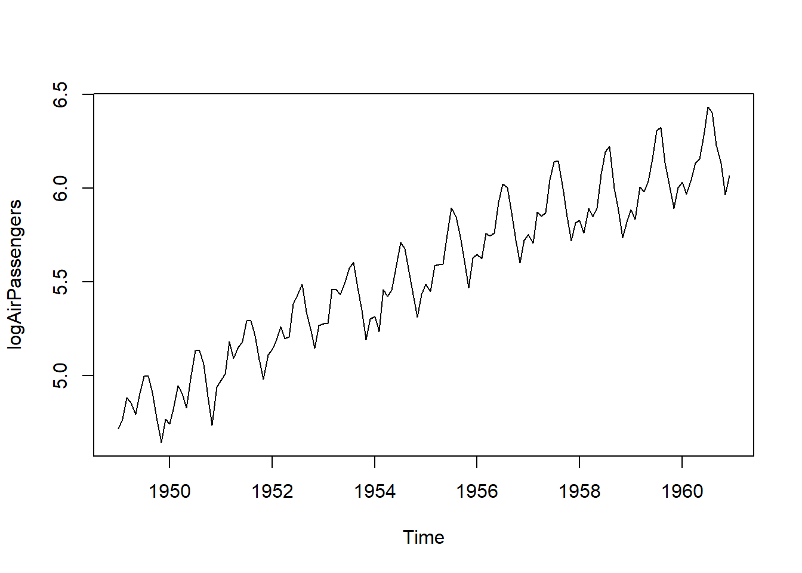
Los conjuntos de datos con este tipo de comportamiento suelen modelarse utilizando modelos multiplicativos. Para eliminar el aumento en la variabilidad, los analistas suelen tomar el logaritmo de los datos y utilizan los “datos logarítmicos” para el análisis.
Los datos logarítmicos de logAirPassengers en la Figura 5.7 (b) no muestran un aumento en la variabilidad dentro del año y son un ejemplo clásico de datos que se modelan utilizando el modelo aditivo en la ecuación (5.16).
Se comenzó discutiendo el modelo aditivo, considerado el más intuitivo de los dos.
A continuación, se discutirán las diferencias en las estrategias de modelado para estos dos conjuntos de datos.
Las descomposiciones aditivas y multiplicativas siguen pasos de implementación similares:
- Estimar el componente de tendencia.
- Eliminar el componente de tendencia, lo que resulta en un conjunto de datos compuesto principalmente por las fluctuaciones estacionales en los datos.
- Calcular un componente estacional “promedio” dentro del año.
- Encontrar el ruido restante.
Se comenzará discutiendo el modelo aditivo, que es el más intuitivo de los dos.
5.2.1.1 Descomposición aditiva
Cuando se analizan datos utilizando el modelo aditivo en la ecuación (5.16), se parte del supuesto de que los datos son la suma de componentes estacionales, de tendencia y de ruido aleatorio. Se discuten los pasos de análisis involucrados en la descomposición de los datos logarítmicos de logAirPassengers. En la práctica, los componentes en la ecuación (5.16) se estiman y un modelo estimado puede describirse como
\[ x_{_t}=\hat{s_{_t}}+\hat{tr_{_t}}+\hat{z_{_t}}. \tag{5.18}\]
Ejemplo 5.5
5.2.1.2 Descomposición multiplicativa
Se llevará a cabo en el Ejemplo 5.6 una descomposición multiplicativa de los datos de AirPassengers. Se destaca que esta serie temporal exhibe un patrón estacional y una variabilidad intra-anual crecientes con el tiempo. A pesar de la posibilidad de modelar estos datos mediante el uso del logaritmo seguido de un modelo aditivo, en esta sección se opta por un enfoque multiplicativo para analizar los datos originales de AirPassengers. Al emplear la descomposición multiplicativa en el análisis de datos, se hace la suposición de que la serie temporal es el resultado de componentes estacionales, de tendencia y de ruido. El modelo estimado se expresa como;
\[ x_{_t}=\hat{s_{_t}}\times \hat{tr_{_t}}\times \hat{z_{_t}}. \tag{5.19}\]
Ejemplo 5.6
Descomposición multiplicativa de AirPassengers
Estimar el Componente de Tendencia: Al igual que con el modelo aditivo, el primer paso consiste en utilizar un suavizador de media móvil centrada, nuevamente en este caso de orden 12. Anteriormente se calculó y representó gráficamente el suavizador de media móvil en la Figura 5.11.
Código
library(tswge) data(AirPassengers) AirPass.sm12=ma.smooth.wge(AirPassengers,order=12) AirPass.sm12=ts(AirPass.sm12$smooth,start=c(1949,1),frequency=12)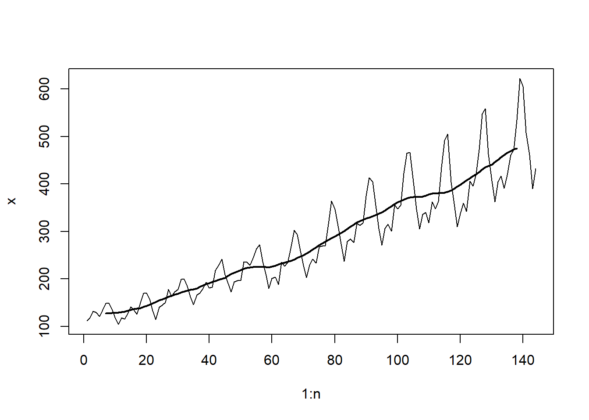Figura 5.11: Datos de pasajeros aéreos con suavizado de orden 12. Es importante recordar que, en relación con el modelo estimado en la ecuación (5.19), \(\hat{tr_{_t}} =\) AirPass.sm12. Esta curva casi lineal se muestra como parte de la descomposición completa en la Figura 5.13.
Eliminar el Componente de Tendencia de los Datos: El siguiente paso consiste en eliminar el componente de tendencia estimado del conjunto de datos de AirPassengers. Esto se puede lograr mediante la división (en lugar de la resta).
Código
seas.AirPass=AirPassengers/AirPass.sm12La conducta estacional de un año a otro resulta mucho más clara en la Figura 5.12 (a) después de eliminar la “interferencia” de la tendencia y el aumento de la variabilidad dentro del año. También se observa que la variabilidad dentro del año no está aumentando tanto como en la Figura 5.3. El incremento en la variabilidad en el modelo final (ecuación (5.19)) se debe a la tendencia creciente que se multiplica por los datos estacionales en la Figura 5.12 (a). Los patrones estacionales en la Figura 5.12 (a) son similares a los de los datos aditivos mostrados en la Figura 5.9 (a).
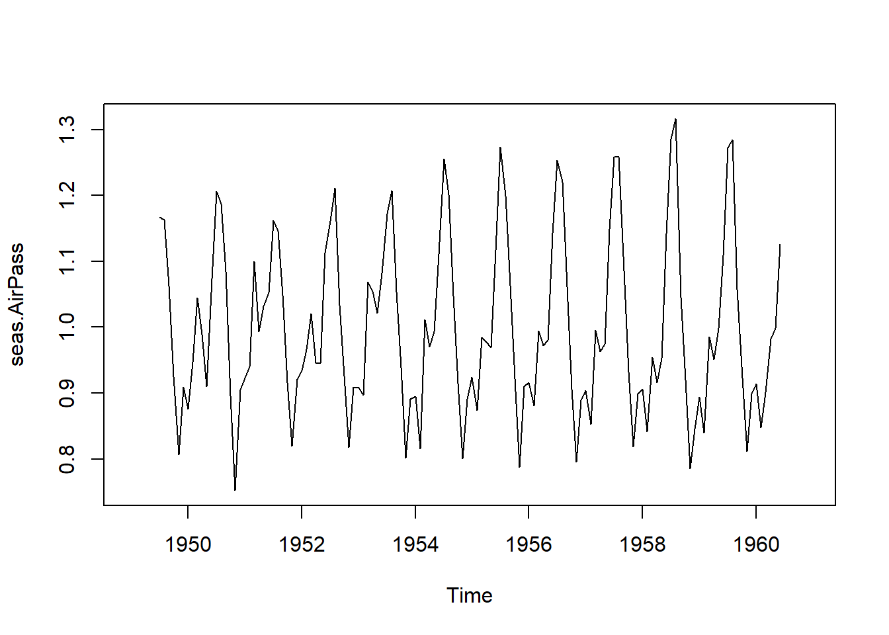
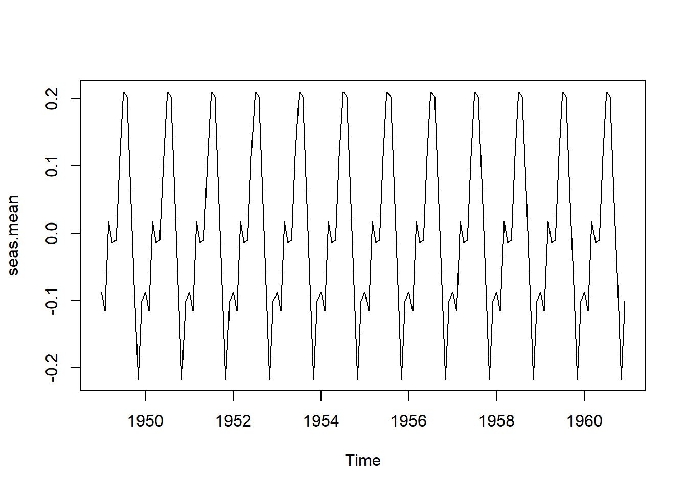
Calcular un “Promedio” del Componente Estacional Dentro del Año: Al igual que en el modelo aditivo, en el modelo 5.17, el componente estacional es un patrón general que se supone igual de un año a otro, y el componente de ruido, \(z_{_t}\), se ajusta a las variaciones de un año a otro con respecto al patrón estacional general. El componente estacional estimado, \(\hat{s_{_t}}\) (que es idéntico para cada año), se representa en la Figura 5.12 (b). Se observa la similitud entre la Figura 5.12 (b) y la Figura 5.9 (b), que fue el componente estacional para la descomposición aditiva de los datos logAirPassengers.
Código
seas.AirPass.numeric=as.numeric(seas.AirPass) seas.AirPass.matrix=matrix(seas.AirPass.numeric,ncol=12) seas.AirPass.matrix.t=t(seas.AirPass.matrix) months=colMeans(seas.AirPass.matrix.t,na.rm=TRUE) seas.means=rep(months,12) seas.means=ts(seas.means,start=c(1949,1),frequency=12)Encontrar el componente de ruido restante: El ruido estimado en la ecuación (5.19), \(\hat{z_{_t}}\), es calculado de la siguiente manera
Código
Air.Pass.noise = AirPassengers / (AirPass.sm12 * seas.mean) plot(decompose(AirPassengers))
Figura 5.13: Descomposición multiplicativa de AirPassengers.
La Figura 5.13 muestra un gráfico de los datos de AirPassengers junto con las partes del procedimiento de descomposición.
5.2.2 Ajuste estacional
5.2.2.1 Ajuste estacional aditivo
Los ajustes estacionales están relacionados con las descomposiciones discutidas previamente. Si una descomposición aditiva es apropiada, entonces se utiliza un ajuste estacional aditivo. Un emparejamiento similar se aplica en el caso multiplicativo. El método de ajuste estacional aditivo más directo, consiste en obtener los datos ajustados estacionalmente, \(\hat{sa_{_t}}\), utilizando la fórmula
\[ \hat{sa_{_t}}=x_{_t}-\hat{s_{_t}}, \tag{5.20}\]
que resta el componente estacional (mostrado en la Figura 5.9 (b)) de los datos.
5.2.2.2 Ajuste estacional multiplicativo
Dado que la descomposición multiplicativa fue apropiada para los datos de pasajeros aéreos, se empleará un ajuste estacional multiplicativo para este conjunto de datos. Similar al método utilizado para el ajuste estacional aditivo, los datos ajustados estacionalmente utilizan la fórmula
\[ \hat{sa_{_t}}=x_{_t}/\hat{s_{_t}}, \tag{5.21}\]
para dividir los datos por el componente estacional (mostrado en la Figura 5.12 (b)).
Ejemplo 5.7
AirPassengers
La Figura 5.14 (a) muestra los datos de Pasajeros Aéreos superpuestos con la estimación de tendencia obtenida utilizando un suavizador de media móvil centrada de orden 12. La Figura 5.14 (b) es una representación gráfica de los datos ajustados estacionalmente calculados utilizando la ecuación (5.21). Es decir, es una representación de AirPassengers.adj. Una vez más, los datos ajustados estacionalmente son similares a la tendencia estimada pero con más detalle respecto a los cambios mensuales.
El análisis de la Figura 5.14 (c) muestra que, el ajuste estacional utilizando seas, es más suave y se ve menos afectado por el aumento de la variabilidad dentro del año en años posteriores. En general, los resultados son similares a los vistos en la Figura 5.14 (b) con los efectos estacionales eliminados.
Código
AirPassengers.adj = AirPassengers/seas.means
library(seasonal)
library(tswge)
data(AirPassengers)
AirPass.sm12=ma.smooth.wge(AirPassengers,order=12)
AirPass.sm12=ts(AirPass.sm12$smooth,start=c(1949,1),frequency=12)
census=seas(AirPassengers)
plot(AirPassengers.adj)
plot(census$data[,3])
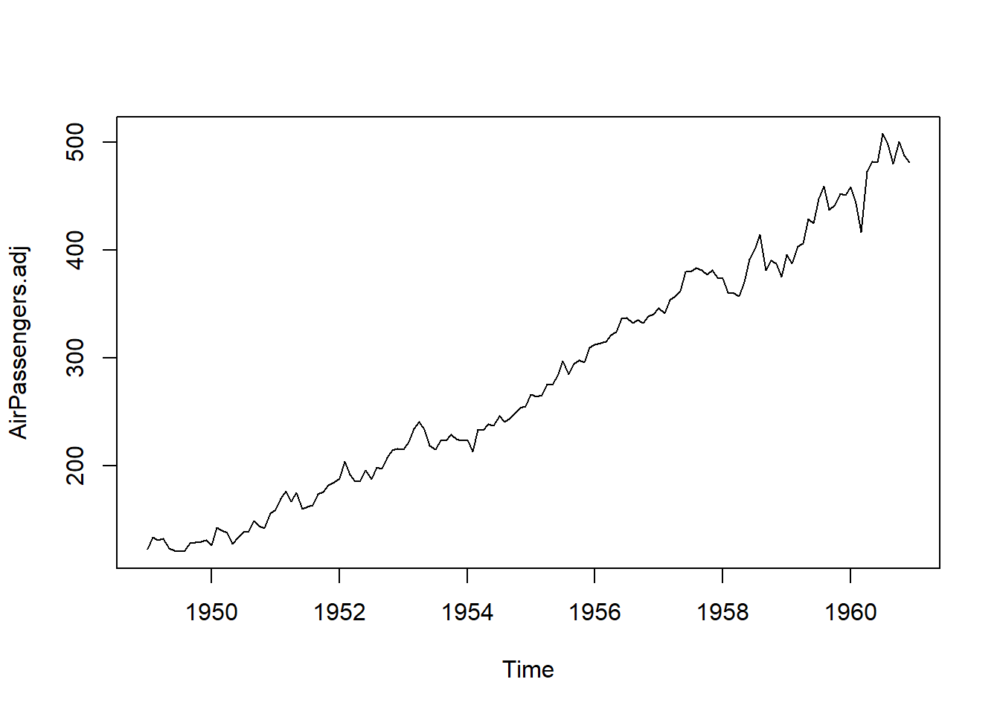
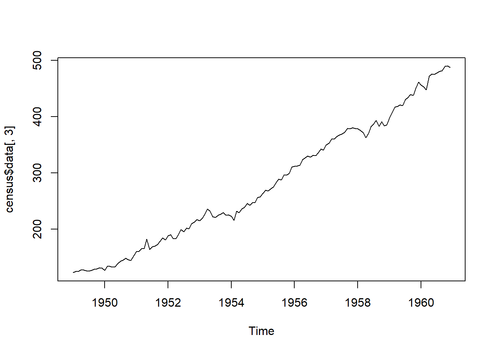
5.3 Pronóstico y métodos predictivos.
Una aplicación principal del análisis de series temporales es la de realizar pronósticos. Anteriormente se mencionó que uno de los propósitos del suavizado es prever valores futuros. De hecho, si existe evidencia de que los patrones previos en un conjunto de datos continuarán en el futuro, se pueden utilizar diversas técnicas para realizar pronósticos.
Por ejemplo, un propietario de negocio puede desear prever la demanda futura de cierto producto para asegurarse de tener la cantidad apropiada de inventario en stock. Una ciudad que toma decisiones sobre infraestructura podría necesitar prever su población en diez años. Un problema difícil pero de interés para muchos en el sector financiero (y para la mayoría de las personas, en realidad) es predecir las fluctuaciones del mercado de valores y de las acciones individuales para que se puedan tomar decisiones de inversión sólidas. Cada uno de estos ejemplos ilustra la aplicabilidad y necesidad de técnicas de pronóstico. Sin una opción mejor, dichos pronósticos a menudo se hacen de manera algo subjetiva, basados en la memoria pasada de eventos similares, rumores o tal vez mediante cálculos intuitivos pero presumidos que proporcionan conjeturas educadas y estimaciones.
Afortunadamente, las técnicas de análisis de series temporales proporcionan una alternativa matemática basada en si las suposiciones matemáticas subyacentes son apropiadas. Esto resulta en algoritmos que calculan pronósticos junto con límites de predicción correspondientes a un determinado nivel de confianza, análogos al cálculo de la media muestral más o menos un margen de error en el entorno de muestra aleatoria no temporal. El escenario típico es que se desarrolle un algoritmo de pronóstico que luego se utilice para predecir un resultado de interés. El pronóstico comprende estimaciones de parámetros que pueden encontrarse utilizando software en un esfuerzo por lograr una capacidad predictiva óptima.
Observación. Se utilizarán los términos predicción y pronóstico de manera sinónima.
5.3.1 Suavizador de media móvil predictivo
En la Sección 5.1.3.1 se explicó cómo se utiliza el suavizador de media móvil centrada para visualizar una versión suavizada de los datos con el propósito de recuperar señales subyacentes o eliminar ruido o efectos estacionales. También se pueden emplear medias móviles para la predicción. En lugar de la media móvil centrada, discutida en la sección mencionada, se utilizará el promedio móvil predictivo para prever valores futuros. Si los datos no exhiben estacionalidad o tendencia, entonces para predecir el valor de la serie temporal en el instante \(t+1\), tiene sentido ‘predecir’ \(x_{_{t+1}}\) como el promedio de los \(k\) valores de datos anteriores para algún \(k\). Es decir, dejando que \(\tilde{x}_{_{t+1}}\) denote la predicción de un paso hacia adelante de \(x_{_{t+1}}\) dada la información hasta el tiempo \(t\), entonces un predictor razonable y muy simple sería
\[ \tilde{x}_{_{t+1}}=\left(\sum\limits_{i=0}^{k+1}x_{_{t-i}}\right)/k. \]
Esto es, el predictor de \(x_{_{t+1}}\) es el promedio de los últimos \(k\) valores de datos.
5.3.2 Suavizado exponencial
Si bien la predicción mediante el promedio móvil es fácil de conceptualizar y calcular, resulta poco realista asumir que todos los valores de datos precedentes tendrán una influencia igual en los valores futuros. Resulta más intuitivo pensar que, en muchos casos, los datos más recientes deberían tener mayor influencia en los valores futuros que los datos en un pasado más distante, ya que son más representativos del estado actual de la realidad. Un método de suavizado que tiene en cuenta esto se conoce como suavizado exponencial. El suavizado exponencial fue introducido por primera vez por R.G. Brown (1956). Nuevamente se considera que cada valor de datos \(x_{_t}\) en una serie temporal está compuesto por un valor medio en cada punto de tiempo \(t\) y un término de error independiente con media cero y varianza constante. Es decir, \(x_{t}=\mu_{_t}+e_{_t}\). Para \(0 \leq \alpha \leq 1\), la recursión de suavizado exponencial para \(t =1, 2, \ldots, n\) es
\[ u_{_{t+1}}=\alpha x_{_t}+ (1-\alpha)u_{_t}. \tag{5.22}\]
La ecuación (5.22) es una combinación lineal del valor actual \(x_{_t}\) junto con \(u_{_t}\), que es la estimación de \(\mu_{_t}\) basada en datos hasta, pero no incluyendo, el tiempo \(t\). En el momento \(t\), el promedio ponderado dado en la expresión anterior es el predictor de \(\mu_{_{t+1}}\). Nótese que la estimación \(\mu_{_t}\) depende en gran medida del parámetro de suavizado \(\alpha\), que varía de \(0\) a \(1\). Cuanto más cercano esté \(\alpha\) a \(1\), más peso se le otorga a los datos más recientes, mientras que cuanto más cercano esté \(\alpha\) a \(0\), menos peso se le otorga a los datos más recientes. Naturalmente, el valor óptimo de \(\alpha\) dependerá de la aplicación particular del conjunto de datos y se puede ajustar en consecuencia. Debido a que la fórmula anterior es recursiva, cada nueva estimación \(\mu_{_t}\) depende de la estimación anterior \(\mu_{_{t-1}}\), que a su vez depende de la estimación \(\mu_{_{t-2}}\), y así sucesivamente. Esta fórmula no parece ser “exponencial” de inmediato, ¿entonces cómo recibe el método su nombre? Dejando \(t = 1, 2, 3, 4,\) vemos que la fórmula recursiva produce lo siguiente:
\[ \begin{split} u_{_1} &= x_{_1}\\ u_{_2} &= \alpha x_{_1}+(1-\alpha)u_{_1}\\ &=\alpha x_{_1}+(1-\alpha)x_{_1}\\ &=x_{_1}\\ u_{_3} &= \alpha x_{_2}+(1-\alpha)u_{_2}\\ &=\alpha x_{_2}+(1-\alpha)x_{_1}\\ u_{_4} &= \alpha x_{_3}+(1-\alpha)u_{_3}\\ &=\alpha x_{_3}+(1-\alpha)[\alpha x_{_2}+(1-\alpha)x_{_1}]\\ &=\alpha x_{_3} + \alpha(1-\alpha)x_{_2}+(1-\alpha)^2x_{_1}\\ u_{_5} &= \alpha x_{_4}+(1-\alpha)u_{_4}\\ &=\alpha x_{_4}+(1-\alpha)[\alpha x_{_3}+\alpha(1-\alpha)x_{_2}+(1-\alpha)^2x_{_1}]\\ &=\alpha x_{_4} + \alpha(1-\alpha)x_{_3}+\alpha(1-\alpha)^2 x_{_2}+(1-\alpha)^3x_{_1} \end{split} \]
En general,
\[ u_{_k}=\sum_{j=1}^{k-2}\alpha(1-\alpha)^{j-1}x_{_{k-j}}+(1-\alpha)^{k-2}x_{_1}. \tag{5.23}\]
Es claro a partir de la ecuación (5.23) que como \(\alpha\) está entre cero y uno, la fórmula recursiva otorga menos peso a las observaciones anteriores y más peso a las observaciones más recientes, y que la magnitud del ponderado es exponencial.
Ejemplo 5.8
Predicción por promedio móvil y suavizado exponencial de AirPassengers
La Figura 5.15 (a) muestra la gráfica de los datos de AirPassengers. La función ma.pred.wge implementada en el software R, que hace parte de la librería tswge, calcula predicciones a un paso utilizando un suavizador de media móvil de quinto orden. Utilizando los datos, la función extiende las predicciones hasta \(x_{_{n+20}}\). La Figura 5.15 (b) representa tanto los datos como las predicciones.
La Figura 5.15 (c) muestra los valores \(u_{_t}\) y exhibe pronósticos a un paso utilizando suavizado exponencial con \(\alpha = 0.4\). Los predictores resultantes son similares a los de la Figura 5.15 (b).
Código
library(tswge)
plot(AirPassengers)
# Predicción por promedio móvil
ma.pred.wge(AirPassengers,order=5,n.ahead=20)
# Predicción por suavizamiento exponencial
expsmooth.wge(AirPassengers,alpha=0.4,n.ahead=20)
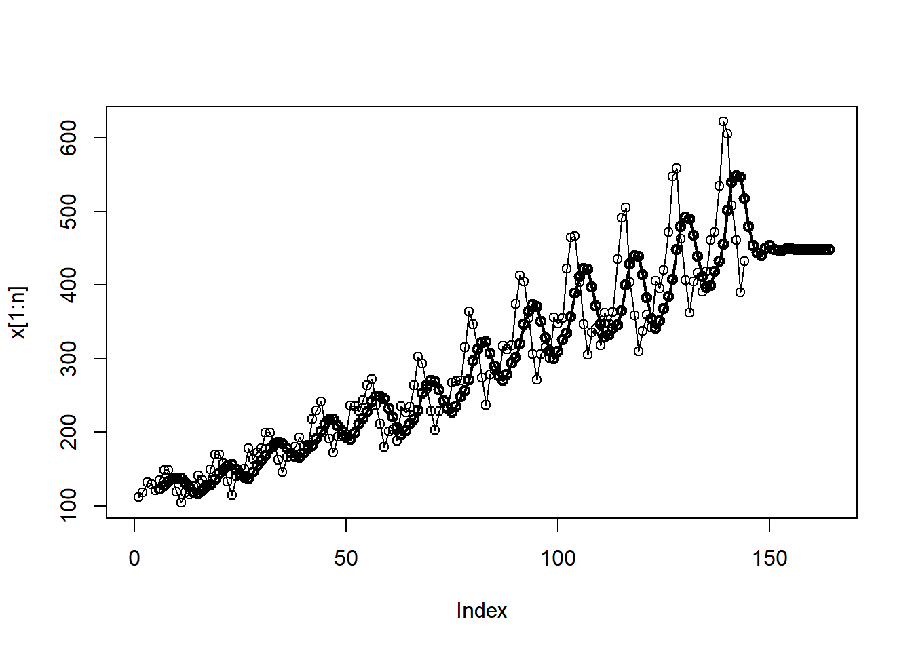
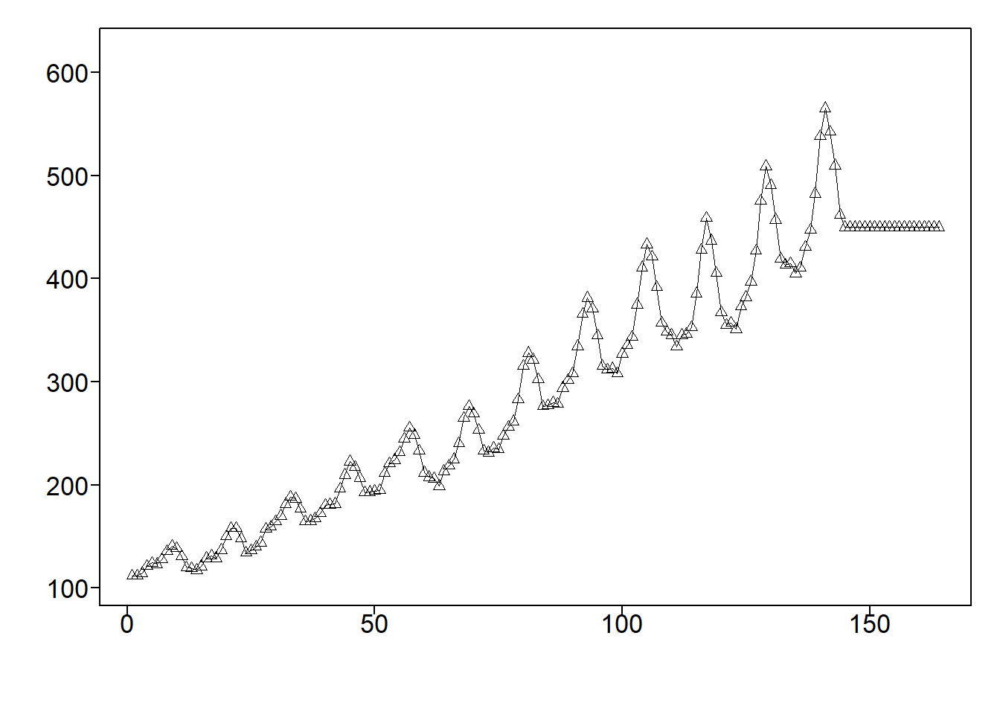
5.3.3 Pronóstico Holt-Winters
El enfoque Holt-Winters es una técnica desarrollada por los economistas Holt (1957) y Winters (1960).
Este método de predicción es una extensión del suavizado exponencial y se aplica a series temporales univariadas. El método no necesita un gran almacenamiento de datos y es simple. Es adecuado para la predicción a corto plazo y utiliza la función de máxima verosimilitud para estimar los parámetros. Existen dos modelos de Holt-Winter que utilizan modelos aditivos o multiplicativos basados en el componente estacional. Los modelos aditivos se aplican para un modelo con una tendencia lineal y con una tendencia exponencial.
5.3.3.1 Ecuaciones aditivas de Holt-Winters
El modelo aditivo de Holt-Winters para datos con tendencia y estacionalidad que no aumentan con el tiempo es adecuado (consulte la ecuación (5.16)). Las fórmulas para la predicción de Holt-Winters son generalizaciones de las ecuaciones de suavizado exponencial; y las ecuaciones de Holt-Winters son las siguientes:
\[ \begin{split} u_{_t}&= \alpha(x_{_t}-s_{_{t-m}})+(1-\alpha)(u_{_{t-1}}+v_{_{t-1}})\\ v_{_t}&= \beta(u_{_t}-u_{_{t-1}})+(1-\beta)v_{_{t-1}}\\ s_{_t}&= \gamma(x_{_t}-u_{_{t-1}})+(1-\gamma)s_{_{t-m}} \end{split} \tag{5.24}\]
Donde \(0 \le \alpha, \beta, \gamma \le 1\), y \(m\) es la longitud del período (por ejemplo, la frecuencia en un archivo de series temporales). Para datos mensuales, \(m = 12\), y para datos trimestrales, \(m = 4\). Los valores \(u_{_t}\) están relacionados con el suavizado exponencial simple y proporcionan una línea base. Los valores \(v_{_t}\) y \(s_{_t}\) se relacionan con los efectos de tendencia y estacionales, respectivamente. Para los tiempos \(t= m+1,\ldots, n\), las predicciones de un paso adelante, \(\hat{x}_{_t}\), para la media en el tiempo \(t\), se expresan como:
\[ \hat{x}_{_t}= u_{_{t-1}}+v_{_{t-1}}+s_{_{t-m}}.\]
Las predicciones para \(x_{_{n+l}}, l=1,\ldots,K\) (es decir, hasta \(K\) pasos más allá del final de los datos observados), se proporcionan de manera recursiva mediante:
\[ \hat{x}_{_{n+l|n}}=u_{_n}+mv_{_n}+s_{_{n+l-ml'}}. \]
Donde \(l' =\left[ \frac{l-1}{m} \right] + 1\), con \(\left[ \frac{l-1}{m} \right]\) denotando el entero mayor o igual a \(\frac{l-1}{m}\). Aquí, \(\alpha, \beta\) y \(\gamma\) son parámetros de suavizado, y se pueden obtener utilizando la función HoltWinters la cual parte de las funciones base que conforman al software R.
5.3.3.2 Ecuaciones multiplicativas de Holt-Winters
Como sugiere el término, las ecuaciones multiplicativas de Holt-Winters son aplicables a datos para los cuales el modelo multiplicativo (ecuación (5.17)) es apropiado. En este caso, las ecuaciones de Holt-Winters son:
\[ \begin{split} u_{_t}&= \alpha(x_{_t}/s_{_{t-m}})+(1-\alpha)(u_{_{t-1}}+v_{_{t-1}})\\ v_{_t}&= \beta(u_{_t}-u_{_{t-1}})+(1-\beta)v_{_{t-1}}\\ s_{_t}&= \gamma(x_{_t}/u_{_{t-1}})+(1-\gamma)s_{_{t-m}} \end{split} \]
Donde \(0 \le \alpha, \beta, \gamma \le 1\), y donde nuevamente, \(m\) es la frecuencia. Las predicciones para los valores de \(x_{_t}\) se expresan mediante:
\[ \hat{x}_{_t}= (u_{_{t-1}}+v_{_{t-1}})s_{_{t-m}} \]
Las predicciones para \(x_{_{n+l}}, l=1,\ldots,K\) (es decir, hasta \(K\) pasos más allá del final de los datos observados), se proporcionan de manera recursiva mediante:
\[ \hat{x}_{_{n+l|n}}=(u_{_n}+lv_{_n})s_{_{n+l-ml'.}} \]
Donde \(l' =\left[ \frac{l-1}{m} \right] + 1\).
Ejemplo 5.9
5.3.4 Modelo Autoregresivo (AR)
Definición 5.11 Se afirma que el proceso \(X_{_t}\) satisface un modelo \(\mathrm{AR}(p)\) (Autoregresivo de orden \(p\)) si
\[ X_{_t}=a_{_t}+\beta+\sum_{k=1}^p \phi_{_k}X_{_{t-k}}, \tag{5.25}\]
donde \(\phi_{_k}, k=1,\ldots,p\) son constantes reales, \(\beta = \left(1-\phi_{_1}-\phi_{_2}-\cdots-\phi_{_p}\right)\mu\), \(\phi_{_p}\neq 0\), y \(a_{_t}\) es un proceso de ruido blanco con media cero y varianza finita \(\sigma_{_a}^2\).
La fórmula en la ecuación (5.25) indica que, el valor del proceso en el tiempo \(t\), es una combinación lineal de los \(p\) valores anteriores más un componente de ruido aleatorio en \(a_{_t}\). Iniciamos nuestra discusión sobre los modelos \(\mathrm{AR}\) al abordar sus propiedades, incluidas las condiciones de estacionariedad y el comportamiento de las autocorrelaciones y densidades espectrales para modelos específicos.
El modelo \(\mathrm{AR}(p)\) general definido en la Definición 5.11, se asemeja a una ecuación de regresión múltiple, donde, en este caso, las “variables independientes” son los \(p\) valores previos de la “variable dependiente” \(X_{_t}\). Otra forma de escribir la ecuación (5.25), después de reorganizar los términos, es:
\[ X_{_t}-\mu-\phi_{_1}(X_{_{t-1}}-\mu)-\phi_{_2}(X_{_{t-2}}-\mu)-\cdots-\phi_{_p}(X_{_{t-p}}-\mu)=a_{_t}. \tag{5.26}\]
Al igual que en el caso de los modelos \(\mathrm{AR}(1)\) y \(\mathrm{AR}(2)\), se expresará con frecuencia el \(\mathrm{AR}(p)\) en la forma de media cero:
\[ X_{_t} -\phi_{_1}X_{_{t-1}}-\phi_{_2}X_{_{t-2}}-\cdots-\phi_{_p}X_{_{t-p}}=a_{_t}. \tag{5.27}\]
Las ecuaciones (5.25) a (5.27) dan la impresión de que un modelo \(\mathrm{AR}(p)\) será mucho más complicado de manejar que un modelo \(\mathrm{AR}(1)\) o \(\mathrm{AR}(2)\). La comprensión de las características de los modelos \(\mathrm{AR}(1)\) y \(\mathrm{AR}(2)\) conduce directamente a comprender el comportamiento de un modelo \(\mathrm{AR}(p)\).
5.3.4.0.1 Hechos sobre el modelo \(\mathrm{AR}(p)\)
\(\mathrm{E}[X_{_t}]=\mu\), para la forma “no nula de la media” del modelo \(\mathrm{AR}(p)\) en la (5.26) y (5.27).
El proceso de varianza es \[\sigma_{_X}^2=\gamma_{_0}=\frac{\sigma_{_a}^2}{1-\phi_{_1}\rho_{_1}-\phi_{_2}\rho_{_2}-\cdots-\phi_{_p}\rho_{_p}},\]
la cuál es contante y finita cuando \(X_{_t}\) es estacionaria.
La autocorrelación de un proceso \(\mathrm{AR}(p)\) satisface \[ \rho_{_k}=\phi_{_p}+\sum_{n=1}^{p-1}\phi_{_n}\rho_{_{k-n}}. \tag{5.28}\]
La ecuación (5.28) conduce a las ecuaciones de Yule-Walker de orden \(p\times p\): \[ \begin{split} \rho_{_{1}} &= \phi_{_1}+\phi_{_{2}} \rho_{_1} +\ldots + \phi_{_p} \rho_{_{p-1}} \\ \rho_{_{2}} &= \phi_{_1}\rho_{_1}+\phi_{_{2}} +\ldots + \phi_{_p} \rho_{_{p-2}}\\ &\vdots \\ \rho_{_{p}} &= \phi_{_1}\rho_{_{p-1}}+\phi_{_{2}} \rho_{_{p-2}} +\ldots + \phi_{_p}. \end{split} \]
Conocer los valores de \(\phi_{_1}, \phi_{_2}, \ldots, \phi_{_p}\) nos permite resolver este sistema de ecuaciones de dimensión \(p\times p\) para \(\rho_{_k}\), donde \(k = 1, 2, \ldots, p\). Las autocorrelaciones basadas en el modelo, \(\rho_{_k}\), para \(k > p\), se pueden calcular utilizando la recursión \(\phi_{_1} \rho_{_{k-1}} - \phi_{_2} \rho_{_{k-2}} + \ldots + \phi_{_p} \rho_{_{k-p}}\). No sorprendentemente, se utilizan funciones computacionales para realizar estos cálculos.
La densidad espectral de un modelo \(\mathrm{AR}(p)\) es dada por
\[ S_{_X}(f)=\frac{\sigma_{_a}^2}{\gamma_{_0}|1-\phi_{_1}e^{-2\pi i f}-\phi_{_2}e^{-4\pi i f}-\cdots-\phi_{_p}e^{-2p\pi i f}|^2} \]
Definición 5.12 (Autocorrelaciones parciales) Sea \(X_{_t}\) un proceso estacionario con autocorrelaciones \(\rho_{_j}=j=0,1,\ldots\).
La autocorrelación parcial en rezago \(k\), denotada como \(\phi_{_{kk}}\) , es la correlación entre \(X_{_t}\) y \(X_{_{t+ k}}\) condicional al “conocimiento” de las variables intervinientes \(X_{_{t+1}}, X_{_{t+2}}\), y \(X_{_{t+k-1}}\).
Considere las siguientes ecuaciones de Yule-Walker donde \(\phi_{_{kj}}\) denota el coeficiente \(j-\)ésimo asociado con las ecuaciones de Yule-Walker de orden \(k\).
\[\begin{split} k&=1\\ \rho_{_1}&=\phi_{_{11}}\\ \\ k&=2\\ \rho_{_1}&=\phi_{_{21}}+\phi_{_{22}}\rho_{_1}\\ \rho_{_2}&=\phi_{_{21}}\rho_{_1}+\phi_{_{22}}\end{split}\]
En general…
\[\begin{split}\rho_{_1}&=\phi_{_{k1}}+\phi_{_{k2}}\rho_{_1}+\cdots+\phi_{_{kk}}\rho_{_{k-1}}\\\rho_{_2}&=\phi_{_{k1}}\rho_{_1}+\phi_{_{k2}}+\cdots+\phi_{_{kk}}\rho_{_{k-2}}\\ \vdots\\ \rho_{_k}&=\phi_{_{k1}}\rho_{_{k-1}}+\phi_{_{k2}}\rho_{_{k-2}}+\cdots+\phi_{_{kk}}\end{split}\]
La función de autocorrelación parcial se define como \(\phi_{_{kk}}, k = 1, 2,...\).
5.3.4.0.2 Notación de operador y ecuación característica para un \(\mathrm{AR}(p)\)
El modelo \(\mathrm{AR}(p)\) en la ecuación (5.26) puede ser escrito en notación de operador como
\[ (1-\phi_{_1}B-\phi_{_2}B^2-\cdots-\phi_{_p}B^p)(X_{_t}-\mu)=a_{_t}. \]
También puede ser escrito utilizando la notación, \(\phi(B)(X_{t}-\mu)=a_{_t}\) , donde \(\phi(B)\) es el operador de orden \(p\)
\[ \phi(B)=1-\phi_{_1}B-\phi_{_2}B^2-\cdots-\phi_{_p}B^p. \]
Convirtiendo el operador \(\phi(B)\) en la expresión algebraica \(\phi(z)\) resulta en el polinomio característico general \(\mathrm{AR}(p)\)
\[ \phi(z)=1-\phi_{_1}z-\phi_{_2}z^2-\cdots-\phi_{_p}z^p. \]
La correspondiente ecuación característica \(\mathrm{AR}(p)\) es
\[\phi(z) = 1 -\phi_{_1}z -\phi_{_2}z^2 - \cdots - -\phi_{_p}z^p = 0.\]
La ecuación característica tiene \(p\) raíces \(r_{_1}, r_{_2} ,\ldots, r_{_p}\) que son reales y/o complejas, donde las raíces complejas aparecen como pares conjugados y algunas raíces pueden ser repetidas.
Teorema 5.3 Un proceso \(\mathrm{AR}(p)\) es estacionario si y solo si todas las raíces de la ecuación característica son mayores que uno en valor absoluto.
Prueba. Vea Harvey (1981).
Ejemplo 5.10
5.3.4.0.3 El Test Aumentado de Dickey-Fuller
Este test ha estado en uso durante muchos años para probar las hipótesis:
\(H_{_0}:\) el modelo contiene una raíz unitaria.
\(H_{_a}\): el modelo no contiene una raíz unitaria (y por lo tanto es estacionario).
Estadístico de prueba: \(\uptau\)
Región de rechazo: Rechazar \(H_{_0}\) si \(\uptau < d_{_\alpha}\), donde \(d_{_\alpha}\) es el valor crítico de nivel \(\alpha\).
David Alan Dickey (1976) obtiene la distribución límite (complicada) del estadístico de prueba. Si \(\uptau \geq d_{_{.05}}\), entonces no se rechaza \(H_{_0}\) y la prueba de Dickey-Fuller detecta una raíz unitaria. Nótese que, el rechazo de la hipótesis nula, lleva a la conclusión de que el proceso es estacionario. Por lo tanto, la conclusión de una raíz unitaria se basa en no rechazar la hipótesis nula. Es importante recalcar que no rechazar la hipótesis nula no implica creer que la hipótesis nula sea verdadera, sino simplemente que no hubo suficiente evidencia para rechazarla.
Para llevar a cabo pruebas de raíz unitaria, se empleará una implementación del test del software estadístico R. Existen diversas opciones, y se utilizará el siguiente comando que incorpora una constante pero no una tendencia en el modelo, y utiliza el criterio de información de Akaike (AIC) para seleccionar el número de rezagos. Se recomienda consultar las obras de David A. Dickey y Fuller (1979) o Fuller (1995) para obtener más detalles al respecto.
5.3.4.0.4 Factorización del polinomio característico de un \(\mathrm{AR}(p)\)
Las raíces de una ecuación cuadrática se pueden encontrar mediante el uso de la fórmula cuadrática. Sin embargo, las cosas se vuelven más complicadas para órdenes polinómicos mayores a dos. La ecuación cúbica
\[ 1-2.1z+1.6z^2-.3z^3=0 \]
puede factorizarse en la forma \((1-.5z)(1-1.6z+.8z^2)\). Basándose en esta factorización, las raíces que se obtienen son \(r_{_1} = 1/.5=2\), \(r_{_2} = 1+.5i\) y \(r_{_3} = 1-.5i\). Es decir, este \(\mathrm{AR}(3)\) tendrá un comportamiento de primer orden asociado con \(1-.5B\) (es decir, una frecuencia de cero), un comportamiento cíclico de segundo orden con una frecuencia de sistema \(f_{_0} = 0.07\), y el proceso es estacionario porque todas las raíces están fuera del círculo unitario.
Teorema 5.4 El polinomio de orden \(p\), \(1-\phi_{_1}z-\phi_{_2}z^2-\cdots-\phi_{_p}z^p\), siempre puede descomponerse como un producto de
Factores de primer orden (lineales) asociados con raíces reales.
Factores de segundo orden (cuadráticos) cuyas raíces son pares conjugados complejos.
5.3.4.0.5 Tablas de factores para modelos \(\mathrm{AR}(p)\)
El Teorema 5.4 establece que, cualquier polinomio de orden \(p\) puede expresarse como un producto de factores de primer orden y/o factores irreducibles de segundo orden. Comprender los factores de primer y segundo orden es la clave para comprender el modelo \(\mathrm{AR}(p)\).
5.4 Evaluación de la precisión de los pronósticos
Para obtener una cuantificación “general” de la calidad de las predicciones, se evalúa qué tan bien coinciden las predicciones (\(f_{_t}\)) con los valores reales (\(y_{_t}\)) en el tiempo \(t\). Afortunadamente, se han ideado métricas de error para evaluar la calidad del modelo y permitir la comparación con otras regresiones que poseen diferentes parámetros. Estas métricas son resúmenes breves pero informativos de la calidad de los datos. A continuación se presentan algunas métricas de rendimiento más comunes (Segall y Niu (2022)).
5.4.1 MAE
El error absoluto medio (MAE) se calcula tomando el residuo para cada punto de datos, considerando únicamente el valor absoluto para minimizar el impacto de los valores atípicos en comparación con la ecuación (5.32). Luego, se obtiene el promedio de todos estos residuos. La ecuación formal se presenta a continuación: \[MAE= \frac{1}{n}\sum_{t=1}^n |y_{_t}-f_{_t}|. \tag{5.30}\] Dado que se emplea el valor absoluto del residuo, no se indica el rendimiento inferior o superior del modelo. Cada residuo contribuye de manera equitativa al error total, y los errores más grandes tienen una mayor contribución al error general. Un MAE pequeño indica un buen rendimiento de predicción, mientras que un MAE grande sugiere que el modelo puede tener dificultades en ciertas áreas. Obtener MAE perfecta de 0 es rara, indica que el modelo es un predictor impecable.
Sin embargo, el uso del valor absoluto del residuo puede no ser el mejor enfoque para interpretar los datos, ya que los valores atípicos (es decir, los puntos de datos que se alejan significativamente de la tendencia general de los datos) pueden afectar significativamente el rendimiento del modelo. Dependiendo del tratamiento de los valores atípicos y extremos en los datos, es posible que se desee resaltar o minimizar su impacto. Como resultado, la elección de la métrica de error adecuada puede verse influida por el problema de los valores atípicos.
5.4.2 MSE
El error cuadrático medio (MSE) es similar al MAE, pero eleva al cuadrado la diferencia antes de sumarlos todos en lugar de utilizar el valor absoluto. Esta diferencia se puede observar en la siguiente ecuación: \[MSE=\frac{1}{n} \sum_{t=1}^n (y_{_t}-f_{_t})^2. \tag{5.31}\] El error medio absoluto (MAE) y el error cuadrático medio (MSE) son métricas de error comúnmente utilizadas en la evaluación de modelos. Sin embargo, el MSE suele ser mayor que el MAE debido al cuadrado de la diferencia. Comparar los dos directamente no siempre es posible, y en su lugar, debemos comparar las métricas de error de nuestro modelo con las de un modelo ya conocido o que se ajuste a la serie de datos. El efecto de los valores atípicos en nuestros datos es más evidente con la presencia del término cuadrado en la ecuación MSE. Mientras que cada residuo en MAE contribuye proporcionalmente al error total, el error crece cuadráticamente en MSE. En última instancia, esto significa que los valores atípicos en nuestros datos contribuirán a un error total mucho mayor en el MSE que en el MAE. Del mismo modo, nuestro modelo se verá más penalizado por hacer predicciones que difieran mucho del valor real correspondiente.
5.4.3 RMSE
RMSE, o error cuadrático medio, es una medida frecuentemente utilizada para evaluar la diferencia entre los valores predichos \(f_{_t}\) y los valores observados \(y_{_t}\). Su función se expresa a continuación, donde \(n\) representa el número de observaciones. En comparación con el error cuadrático medio (MSE), RMSE toma la raíz cuadrada de MSE y restituye la unidad al mismo nivel que la variable dependiente. Por lo tanto, tiene la ventaja de ser interpretado directamente. En general, un valor de RMSE más bajo es preferible, y RMSE\(=0\) indica un ajuste perfecto de los datos. La desventaja de RMSE es su sensibilidad a valores atípicos, ya que unos pocos errores grandes en la suma pueden generar un aumento significativo, y la prueba no distingue entre subestimación y sobreestimación. Como se discutió anteriormente en la descripción de los datos, el conjunto de datos que se utiliza tiene varios valores extremos de gastos elevados, por lo que utilizar solo RMSE como medida podría no ser muy adecuado.
La fórmula para el cálculo de RMSE es la siguiente: \[RMSE= \sqrt{\frac{\sum_{t=1}^n (y_t-f_t)^2}{n}}. \tag{5.32}\]
5.4.4 MAPE
El error porcentual absoluto medio (MAPE) mide la precisión de la predicción como un porcentaje y se define generalmente de la siguiente manera. \[MAPE=\frac{100}{n}\sum_{t=1}^n \left| \frac{y_t-f_t}{y_t}\right|. \tag{5.33}\]
La ventaja es que es muy intuitivo interpretar el error relativo, y un MAPE más bajo significa un error menor. MAPE es similar a MAE, pero normaliza MAE mediante observaciones reales, resolviendo así el problema de que MAE proporciona poca información sobre el error al comparar datos de diferentes escalas. Sin embargo, también presenta la desventaja de que puede producir valores infinitos o indefinidos para valores reales cercanos o iguales a cero. Otra limitación de MAPE es que penaliza más los errores negativos que los errores positivos. Por ejemplo, para un valor real de \(100\) y un valor estimado de \(90\), el MAPE es \(0.10\). Para el mismo valor estimado y un valor real de \(80\), el MAPE es \(0.125\). Como resultado, si se utiliza MAPE como función objetivo, el estimador preferirá valores más pequeños y puede sesgarse hacia errores negativos.